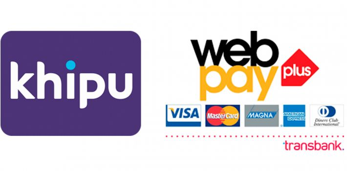

<!--
  Generated template for the GastosComunesPage page.

  See http://ionicframework.com/docs/components/#navigation for more info on
  Ionic pages and navigation.
-->
<ion-header>

  <ion-navbar>
    <ion-title>Safit - Gastos Comunes</ion-title>
    <button ion-button icon-only menuToggle color="light">
      <ion-icon name="menu"></ion-icon>
    </button>
  </ion-navbar>

</ion-header>


<ion-content padding class="fondo">
  <ion-card>
    
    <ion-card-content>
      <ion-card-title>
        Pago de Gastos Comunes.
      </ion-card-title>
      <p>
        Proximamente olvidate de los papeles, paga tus gastos comunes de manera fácil y segura.
      </p>
    </ion-card-content>
  </ion-card>
</ion-content>